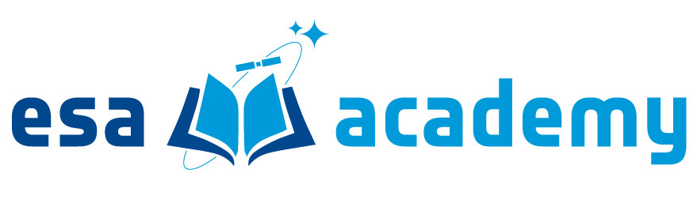

About
Bridging the gap between theoretical aerospace engineering and hands-on technical execution. My academic and professional journey is deeply international, having trained at leading institutions across Europe—from my foundational degrees at the Universidad de Sevilla in Spain to my Master's studies at Politecnico di Milano in Italy, along with specialized space programs with ESA and Ariane Cities in the Netherlands and France.
My technical background is rooted in rigorous experimental research, including conducting wind tunnel testing to characterize electric motor efficiency for eVTOL aircraft. This research allowed me to share my findings on international stages, presenting at the 51st European Rotorcraft Forum in Italy and representing my university at the PEGASUS Student Conference.
Today, I apply these analytical and AIT methodologies to push the boundaries of space technology. Whether I am developing navigation algorithms for autonomous rovers or building cubesat shock test stands, I thrive in dynamic, cross-border environments where I can drive innovation in aerospace technology.
Core Competencies & Tools
Professional Experience

Intern in the Technology Department
European Space Agency, Redu, Belgium · May, 2026 - Present
- Development of a CubeSat Shock Testing Facility.
- Composition of the Assembly, Integration and Verification plan.
- Production of user manual and other documentation.
- Development of the test procedure.

Summer Engineering Intern
Spanish Air and Space Force, Seville, Spain · 2022
- Study and analysis of maintenance control of aeronautical parts from Spanish Air and Space Force.
- McDonell Douglas F-18 Hornet: analysis of maintenance records of parts from the pneumatic system.
- CASA CN-295: creation of maintenance and repair instructions of the main landing gear.
- CASA CN-235: design in CATIA V5 of an accessory for the propeller hub to be mounted onto its test fixture.
Academic Background

Master of Science in Space Engineering
Politecnico di Milano, Milan, Italy · 2023 - 2026 (expected)
- Key Modules: Space Propulsion, Combustion in Thermochemical Propulsion, Systems Engineering, Spacecraft Guidance and Navigation, Spacecraft Attitude Dynamics, Space Systems Simulation, PCB Design (Altium).

Master of Science in Aeronautical Engineering
Universidad de Sevilla, Seville, Spain · 2023 - 2026 (expected)
- Key Modules: Turbomachinery Design, Spacecraft Systems, Flight Dynamics, Aeroelasticity, Composite Materials, Computational Fluid Dynamics.
Bachelor of Science in Aerospace Engineering
Universidad de Sevilla, Seville, Spain · 2019 - 2023
- Final Thesis: "Comparative analysis of performances of different motor-propeller combinations for the characterization of electric motors efficiency".
- Key Modules: Orbital Mechanics, Flight Mechanics, Fundamentals of Propulsion, Structures, Advanced Aerodynamics, CAD/CAM.
Awards & Conferences

51st European Rotorcraft Forum
Venice, Italy · Sept 9 - 12, 2025
- Presented the characterization of electric motors efficiency for the development for eVTOL convertible aircraft.

Best Bachelor's Thesis on an aerospace topic
AIRBUS GROUP Aerospace Chair, Seville, Spain · Oct 16, 2024
- Award to the Best Bachelor's Thesis on an aerospace topic defended between 2019 and 2023 at ETSI, University of Seville.

20th PEGASUS Student Conference
Universitat Politècnica de Catalunya, Spain · Apr 26 - 27, 2024
- Student representative of the University of Seville, in its contributions to the PEGASUS European network.
Involvement
Participant in the 2nd Electric Propulsion Summer School
ESTEC, Noordwijk, Netherlands · Apr 1 - 3, 2025
- Lectures on electric propulsion fundamentals, technologies, simulations, and mission applications.

Participant in the ESA Academy's Robotics Workshop
ESTEC, Noordwijk, Netherlands · Oct 29 - Nov 1, 2024
- Worked developing navigation algorithms and machine learning models applied to an ExoMy Rover.

Participant in the 22nd CVA Summer School
Vernon, Normandie, France · Jul 2 - 22, 2023
- Based in space transportation and targeted at university students and young engineers from the aerospace industry.
Intern at the Department of Aerospace Engineering
Universidad de Sevilla, Sevilla · Dec 1, 2022 - Jun 30, 2023
- Research for my Bachelor's Final Thesis within propulsive studies.
- Wind tunnel testing for the characterization of electric motors efficiency for the development of eVTOL convertible aircraft.